An outbreak of gastroenteritis in Stegen, Germany, June 1998
Context
On 26 June 1998, the St Sebastian High School in Stegen (school A), Germany, celebrated a graduation party, where 250 to 350 participants were expected. Attendants included graduates from that school, their families and friends, teachers, 12th grade students, and some graduates from a nearby school (school B).
A self-service party buffet was supplied by a commercial caterer from a the nearby city of Freiburg. Food was prepared on the day of the party and transported in a refrigerated van to the school. Relative locations of the two schools and Freiburg can be seen below:
Festivities at school A started with a dinner buffet open from 8.30 pm onwards and were followed by a dessert buffet offered from 10 pm. The party and the buffet extended late into the night and alcoholic beverages were quite popular. All agreed it was a party to be remembered.
The alert
On 2nd July 1998, the Freiburg local health office reported to the Robert Koch Institute (RKI) in Berlin a significant increase of cases of gastroenteritis in the munipality of Stegen following the graduation party described above. More than 100 cases were suspected among participants and some of them were so ill that they were admitted to nearby hospitals. Sick people showed symptoms like; fever, nausea, diarrhoea and vomiting lasting for several days. Stool samples were collected from several ill cases and send to the laboratory in Freiburg for microbiological identification. Salmonella enteritidis was identified in 19 stool samples.
In response to the large number of cases associated with the dinner the Freiburg health office sent an outbreak control team to investigate the kitchen of the caterer in Freiburg. Food preparation procedures were reviewed. Samples were taken of remaining food items after the graduation ceremony and were sent to the laboratory of Freiburg University. Microbiological analyses were performed on samples of the following food items: brown chocolate mousse, caramel cream, remoulade sauce, yoghurt dill sauce, and 10 raw eggs. Unfortunately no tiramisu was left over after the dinner so no samples were tested of this specific food item.
The Freiburg health office requested help from the RKI in the investigation to assess the magnitude of the outbreak and identify potential vehicle(s) and risk factors for transmission in order to better control the outbreak.
The epidemiological study
Case definition: cases were defined as any person who had attended the party at St Sebastian High School and who suffered from diarrhoea (min. 3 loose stool for 24 hours) between 27 June and 29 June 1998, or from at least three of the following symptoms: vomiting, fever over 38.5° C, nausea, abdominal pain, headache.
Students from both schools attending the party were asked through phone interviews to provide names of persons who attended the party.
Overall, 291 responded to enquiries and 103 cases were identified. The linelist analysed in this case study was built from these 291 responses.
This case study
In this case study, we will take you through the analysis of this epidemic using R. This will be the occasion to illustrate more generally useful practices for data analysis using R, including:
- how to read and import data from Excel
- how to explore data using tables and summaries
- how to clean data
- how to make graphics to describe the data
- how to test if specific food items are linked to the disease
- how to plot a very basic spatial overview of cases
Initial data processing
Project setup
When using R, it’s a very good idea to keep your data and scripts organised together. One way of doing this is to keep them in a single folder that hosts and RStudio project file. For this project, your folder structure will start out looking like this:
.
├── 01-stegen-analysis.R
├── data/
│ ├── stegen-map/
│ │ ├── stegen_households.cpg
│ │ ├── stegen_households.prj
│ │ ├── stegen_households.qpj
│ │ ├── stegen_households.shp
│ │ └── stegen_households.shx
│ └── stegen_raw.xlsx
├── LICENSE
├── README.md
└── stegen.Rproj
To create this, do the following steps:
- Open RStudio and create a new RStudio project in a new directory called “stegen”
- Once you have your Project set up, make a new folder called “data/”
and download
stegen_raw.xlsxand save it to that folder - Download
stegen-map.zipand extract it to the “data/” folder - In RStudio, click on the following menu path: File > New File
> R Script and save it as
01-stegen-analysis.R. This will be the R script where you will save the code of the analysis.
LICENSE and README.md
files?
Both of these files are plain text files (edited via programs such as notepad or textedit) that tell people how they can use the data and code.
The README.md file is a text file that describes in plain language
what this project is about and what the components are. It’s called
README with the idea that anyone who comes across this project should be
able to read this file first and understand how to work with the
project.
The LICENSE file describes how the data and code are to be used. For
example, this case study is licensed under the Creative Commons
Attribution 4.0 International
license which gives
people the freedom to reuse this in any way as long as they attribute
the original authors.
Loading required packages
The following packages will be used in the case study:
- here: to find the path to data or script files
- readxl: to read Excel spreadsheets into R
- readr: to write (and read) spreadsheets as text files
- incidence: to build epicurves
- epitrix: to clean labels from our spreadsheet
- dplyr: to help with factors
- ggplot2: to create custom visualisations
- epitools: to calculate risk ratios
- sf: To read in shape files
- leaflet: to demonstrate interactive maps
If we have these packages installed, we can tell R to load these packages from our R library:
library("here") # find data/script files
library("readxl") # read xlsx files
library("readr") # read and write text spreadsheets
library("incidence") # make epicurves
library("epitrix") # clean labels and variables
library("dplyr") # general data handling
library("ggplot2") # advanced graphics
library("epitools") # statistics for epi data
library("sf") # shapefile handling
library("leaflet") # interactive mapsNote that you will get an error if the packages have not been installed on your system. To install them (you only need to do this once!), type:
install.packages("here")
install.packages("readxl")
install.packages("readr")
install.packages("incidence")
install.packages("epitrix")
install.packages("dplyr")
install.packages("ggplot2")
install.packages("epitools")
install.packages("sf")
install.packages("leaflet")Loading these packages makes all functions implemented by the packages
available, so that function_name() can be used directly (without the
package_name:: prefix). This is not a problem here as these packages
do not implement functions with identical names.
Importing data from Excel
Linelist data can be read from various formats, including flat text
files (e.g. .txt, .csv), other statistical software (e.g. STATA) or
Excel spreadsheets. We illustrate the latter, which is probably the most
common format. We assume that the data file
stegen_raw.xlsx has been saved in a
data/ folder of your project, and that your current R session is at
the root of the project.
Here we decompose the steps to read data in:
- finding the path to the data (
path_to_data) with the here package - using the function
read_excel()from the readxl package to read data in, and saving the output in a new objectstegen.
path_to_data <- here("data", "stegen_raw.xlsx")
path_to_data
## [1] "/home/zkamvar/Documents/Websites/recon-learn/data/stegen_raw.xlsx"n.b. the value of
path_to_datawill not be the what you see in this tutorial. It will be the location of this data set on your computer.
stegen <- read_excel(path_to_data)To look at the content of the dataset, we can use either of these commands:
stegen
## # A tibble: 291 x 23
## `Unique key` ill `Date-onset` SEX Age tiramisu tportion wmousse
## <dbl> <dbl> <chr> <dbl> <dbl> <dbl> <dbl> <dbl>
## 1 210 1 1998-06-27 1 18 1 3 0
## 2 12 1 1998-06-27 0 57 1 1 0
## 3 288 1 1998-06-27 1 56 0 0 0
## 4 186 1 1998-06-27 0 17 1 1 1
## 5 20 1 1998-06-27 1 19 1 2 0
## 6 148 1 1998-06-27 0 16 1 2 1
## 7 201 1 1998-06-27 0 19 1 3 0
## 8 106 1 1998-06-27 0 19 1 2 1
## 9 272 1 1998-06-27 1 40 1 2 1
## 10 50 1 1998-06-27 0 53 1 1 1
## # ... with 281 more rows, and 15 more variables: dmousse <dbl>,
## # mousse <dbl>, mportion <dbl>, Beer <dbl>, redjelly <dbl>, `Fruit
## # salad` <dbl>, tomato <dbl>, mince <dbl>, salmon <dbl>,
## # horseradish <dbl>, chickenwin <dbl>, roastbeef <dbl>, PORK <dbl>,
## # latitude <dbl>, longitude <dbl>View(stegen)If the above fails, you should check:
- that your data file has been saved in the right folder, with the right name (lower case and upper case do matter)
- that your R session was started from the right project - if unsure,
close R and re-open Rstudio by double-clicking on the
.Rprojfile - that all packages are installed and loaded (see installation guidelines above)
Overview and summaries
We first have a quick look at the content of the data set. The information we are looking for is:
- the numbers of cases (rows) and variables (columns) in the data
- the name of the variables: do they use consistent capitalisation and separators?
- the type of the variables: are dates, numeric or categorical variables used when they should?
- the coding of the variables: are explicit labels (e.g.
"male"/"female") used where relevant?
We first check the dimensions of the stegen object, and the name of
the variables:
dim(stegen) # rows x columns
## [1] 291 23
names(stegen) # column labels
## [1] "Unique key" "ill" "Date-onset" "SEX" "Age"
## [6] "tiramisu" "tportion" "wmousse" "dmousse" "mousse"
## [11] "mportion" "Beer" "redjelly" "Fruit salad" "tomato"
## [16] "mince" "salmon" "horseradish" "chickenwin" "roastbeef"
## [21] "PORK" "latitude" "longitude"We can now try and summarise the dataset using:
summary(stegen)
## Unique key ill Date-onset SEX
## Min. : 1.0 Min. :0.000 Length:291 Min. :0.0000
## 1st Qu.: 73.5 1st Qu.:0.000 Class :character 1st Qu.:0.0000
## Median :146.0 Median :0.000 Mode :character Median :1.0000
## Mean :146.0 Mean :0.354 Mean :0.5223
## 3rd Qu.:218.5 3rd Qu.:1.000 3rd Qu.:1.0000
## Max. :291.0 Max. :1.000 Max. :1.0000
##
## Age tiramisu tportion wmousse
## Min. :12.00 Min. :0.0000 Min. :0.0000 Min. :0.0000
## 1st Qu.:18.00 1st Qu.:0.0000 1st Qu.:0.0000 1st Qu.:0.0000
## Median :20.00 Median :0.0000 Median :0.0000 Median :0.0000
## Mean :26.66 Mean :0.4231 Mean :0.6678 Mean :0.2599
## 3rd Qu.:27.00 3rd Qu.:1.0000 3rd Qu.:1.0000 3rd Qu.:1.0000
## Max. :80.00 Max. :1.0000 Max. :3.0000 Max. :1.0000
## NA's :8 NA's :5 NA's :5 NA's :14
## dmousse mousse mportion Beer
## Min. :0.0000 Min. :0.0000 Min. :0.0000 Min. :0.0000
## 1st Qu.:0.0000 1st Qu.:0.0000 1st Qu.:0.0000 1st Qu.:0.0000
## Median :0.0000 Median :0.0000 Median :0.0000 Median :0.0000
## Mean :0.3937 Mean :0.4256 Mean :0.6523 Mean :0.3911
## 3rd Qu.:1.0000 3rd Qu.:1.0000 3rd Qu.:1.0000 3rd Qu.:1.0000
## Max. :1.0000 Max. :1.0000 Max. :3.0000 Max. :1.0000
## NA's :4 NA's :2 NA's :12 NA's :20
## redjelly Fruit salad tomato mince
## Min. :0.0000 Min. :0.000 Min. :0.0000 Min. :0.000
## 1st Qu.:0.0000 1st Qu.:0.000 1st Qu.:0.0000 1st Qu.:0.000
## Median :0.0000 Median :0.000 Median :0.0000 Median :0.000
## Mean :0.2715 Mean :0.244 Mean :0.2852 Mean :0.299
## 3rd Qu.:1.0000 3rd Qu.:0.000 3rd Qu.:1.0000 3rd Qu.:1.000
## Max. :1.0000 Max. :1.000 Max. :1.0000 Max. :1.000
##
## salmon horseradish chickenwin roastbeef
## Min. :0.0000 Min. :0.0000 Min. :0.0000 Min. :0.00000
## 1st Qu.:0.0000 1st Qu.:0.0000 1st Qu.:0.0000 1st Qu.:0.00000
## Median :0.0000 Median :0.0000 Median :0.0000 Median :0.00000
## Mean :0.4811 Mean :0.3093 Mean :0.2887 Mean :0.09966
## 3rd Qu.:1.0000 3rd Qu.:1.0000 3rd Qu.:1.0000 3rd Qu.:0.00000
## Max. :9.0000 Max. :9.0000 Max. :1.0000 Max. :1.00000
##
## PORK latitude longitude
## Min. :0.0000 Min. :47.98 Min. :7.952
## 1st Qu.:0.0000 1st Qu.:47.98 1st Qu.:7.959
## Median :0.0000 Median :47.98 Median :7.961
## Mean :0.4742 Mean :47.98 Mean :7.962
## 3rd Qu.:1.0000 3rd Qu.:47.98 3rd Qu.:7.965
## Max. :9.0000 Max. :47.99 Max. :7.974
## NA's :160 NA's :160Note that binary variables, when treated as numeric values (0/1), are
summarised as such, which may not always be useful. As an alternative,
table() can be used to list all possible values of a variable, and
count how many time each value appears in the data. For instance, we can
compare the summary() and table() for consumption of tiramisu:
stegen$tiramisu # all values
## [1] 1 1 0 1 1 1 1 1 1 1 1 1 1 1 1 1 1 1 1 1 1 1 1
## [24] 1 1 1 1 1 1 1 1 1 1 1 1 1 1 1 1 1 1 1 1 1 1 1
## [47] 1 1 1 1 1 1 1 1 1 1 1 1 1 1 1 1 1 0 1 1 1 NA 1
## [70] 0 1 1 NA 1 1 1 1 1 1 1 1 1 1 1 0 1 1 0 1 1 1 1
## [93] 1 0 1 1 1 1 0 0 0 0 0 0 0 0 1 0 1 0 0 1 0 0 0
## [116] 0 0 0 NA 1 0 0 1 0 0 0 0 0 1 0 0 0 0 1 0 0 0 0
## [139] 0 0 0 0 0 0 0 0 0 0 0 0 0 0 1 0 0 0 0 0 0 0 1
## [162] 0 0 1 0 0 0 0 0 0 0 0 0 0 1 1 0 0 0 0 0 0 0 0
## [185] 0 0 0 NA 0 0 0 0 0 1 0 0 1 0 1 1 0 0 0 0 1 0 0
## [208] 0 0 0 0 0 1 0 0 1 0 0 0 0 1 0 0 1 0 0 0 1 1 0
## [231] 0 0 0 0 0 1 0 0 0 0 0 0 0 1 0 1 0 0 0 0 0 0 0
## [254] 0 0 1 0 0 0 1 0 0 0 1 0 0 0 0 0 0 NA 0 1 0 0 0
## [277] 0 0 0 0 0 0 0 0 0 0 0 0 0 0 1
summary(stegen$tiramisu) # summary
## Min. 1st Qu. Median Mean 3rd Qu. Max. NA's
## 0.0000 0.0000 0.0000 0.4231 1.0000 1.0000 5
table(stegen$tiramisu) # table
##
## 0 1
## 165 121Good news: the dataset has the expected dimensions, and all the relevant variables seem to be present. There are, however, a few often observed issues:
- variable names are a bit messy, and include different separators, spaces, and irregular capitalisation
- variable types are partly wrong:
- unique keys should be
character(i.e. character strings) - dates of onset should be
Date(R is good at handling actual dates) - illness and sex should be
factor(i.e. a categorical variables)
- unique keys should be
- labels used in some variables are ambiguous:
- sex should be coded explicitely, not as 0 (here, male) and 1 (here, female)
- illness should be coded explicitely, not as 0 (here, non-case) and 1 (case)
- some binary variables have maximum values of 9 (see
summary(stegen))
Data cleaning
While it is tempting to go back to the Excel spreadsheet to fix issues
with data, it is almost always quicker and more reliable to clean data
in R directly. Here, we make a copy of the old data set, and clean
stegen before further analysis.
stegen_old <- stegen # save 'dirty data'We use *epitrix*’s function clean_labels() to standardise the variable
names:
new_labels <- clean_labels(names(stegen)) # generate standardised labels
new_labels # check the result
## [1] "unique_key" "ill" "date_onset" "sex" "age"
## [6] "tiramisu" "tportion" "wmousse" "dmousse" "mousse"
## [11] "mportion" "beer" "redjelly" "fruit_salad" "tomato"
## [16] "mince" "salmon" "horseradish" "chickenwin" "roastbeef"
## [21] "pork" "latitude" "longitude"
names(stegen) <- new_labelsWe convert the unique identifiers to character strings (character),
dates of onset to actual Date objects, and sex and illness are set to
categorical variables (factor):
stegen$unique_key <- as.character(stegen$unique_key)
stegen$sex <- factor(stegen$sex)
stegen$ill <- factor(stegen$ill)
stegen$date_onset <- as.Date(stegen$date_onset)We use the function recode() from the dplyr package to recode sex
more explicitely:
stegen$sex <- recode_factor(stegen$sex, "0" = "male", "1" = "female")
stegen$ill <- recode_factor(stegen$ill, "0" = "non case", "1" = "case")Finally we look in more depth into these variables having maximum values
of 9, where we expect 0/1; table() is useful to list all values taken
by a variable, and listing their frequencies:
table(stegen$pork)
##
## 0 1 9
## 169 120 2
table(stegen$salmon)
##
## 0 1 9
## 183 104 4
table(stegen$horseradish)
##
## 0 1 9
## 217 72 2The only rogue values are 9; they are likely either data entry issues,
or missing data, which in R should be coded as NA (“not
available”). We can replace these values using:
stegen$pork[stegen$pork == 9] <- NA
stegen$salmon[stegen$salmon == 9] <- NA
stegen$horseradish[stegen$horseradish == 9] <- NAThere are several things going on in a command like:
stegen$pork[stegen$pork == 9] <- NAlet us break them down from the inside out.
stegen$porkmeans “get the variable calledporkin the datasetstegen”- The
==is a logical test for equality.stegen$pork == 9tests each element instegen$porkif it’s equal to9, returningTRUEif an element ofstegen$porkis equal to9andFALSEif it doesn’t. - The square brackets (
[ ]) subset the vectorstegen$porkaccording to whatever is between them; In this case, it’s the teststegen$pork == 9, which evaluates to FALSE, FALSE, FALSE, TRUE, FALSE, FALSE… This will return only the cases instegen$porkthat have9s recorded. - The replacement:
... <- NAreplace...withNA(missing value)
in other words: “isolate the entries of stegen$pork which equal 9,
and replace them with NA; here is another toy example to illustrate
the procedure:
## make toy input vector
toy_vector <- 1:5
toy_vector
## [1] 1 2 3 4 5
## make toy logical vector for subsetting
toy_logical <- c(FALSE, TRUE, TRUE, FALSE, TRUE)
toy_logical
## [1] FALSE TRUE TRUE FALSE TRUE
toy_vector[toy_logical] # subset values
## [1] 2 3 5
toy_vector[toy_logical] <- 0 # replace subset values
toy_vector # check outcome
## [1] 1 0 0 4 0Saving clean data
Now that we’ve cleaned our data, we will probably want to re-use it in
further analyses, but we probably don’t want to go through the steps of
cleaning it again. Here, we will save our cleaned data into a new folder
under data/ called cleaned/. We will use R’s function
dir.create() to create this folder under our data folder:
clean_dir <- here("data", "cleaned")
dir.create(clean_dir)STOP: open your file browser and confirm that file called “data/cleaned” has been created
We will store two different files in this directory that represent the same data:
- a flat text file (spreadsheet) that can be read by any program
- a binary file that can only be accessed from R
Saving as a flat file
A flat file is a text file that can be read by any program. The most
common type of flat file is a called a csv (comma separated values)
file. This is a text version of a spreadsheet with commas denoting the
columns. We can use the write_csv() function from the readr package
to do this:
stegen_clean_file <- here("data", "cleaned", "stegen_clean.csv")
write_csv(stegen, path = stegen_clean_file)When you want to read in the file later, you can use the read_csv()
function.
Saving as a binary file
When you save as a flat file, you will have to re-define which varaibles are dates and which are factors when you re-read in the clean data. One way to avoid doing this is to save your data into a file called an RDS file, which is a data file that only R can read. This will preserve your column definitions.
stegen_clean_rds <- here("data", "cleaned", "stegen_clean.rds")
saveRDS(stegen, file = stegen_clean_rds)To read in the clean data for later use, we would use the readRDS()
function.
Data exploration
Summaries of age and sex distribution
It is good practice to first start to explore and familiarise yourself with a dataset before heading into the analyses of your data. We can have a brief look at age and sex distributions using some basic summaries; for instance:
summary(stegen$age) # age stats
## Min. 1st Qu. Median Mean 3rd Qu. Max. NA's
## 12.00 18.00 20.00 26.66 27.00 80.00 8
summary(stegen$sex) # gender distribution
## male female
## 139 152
tapply(stegen$age, INDEX = stegen$sex, FUN = summary) # age stats by gender
## $male
## Min. 1st Qu. Median Mean 3rd Qu. Max. NA's
## 12.00 17.50 19.00 26.38 28.00 80.00 4
##
## $female
## Min. 1st Qu. Median Mean 3rd Qu. Max. NA's
## 13.00 18.00 20.00 26.93 24.50 65.00 4tapply():
tapply() is a very handy function to stratify any kind of analyses.
You will find more details by reading the documentation of the function
?tapply(), but briefly, the syntax to be used is tapply(input_data,
stratification, function_to_use, further_arguments). In the command
used above:
tapply(stegen$age, INDEX = stegen$sex, FUN = summary)this literally means: select the age variable in the dataset stegen
(stegen$age), stratify it by sex (stegen$sex), and summarise each
stratum (summary()). So for instance, to get the average age by sex
(function mean()), one could use:
tapply(stegen$age, INDEX = stegen$sex, FUN = mean, na.rm = TRUE)
## male female
## 26.37778 26.92568Here we illustrate that further arguments to the function mean() can
be passed on; here, na.rm = TRUE means “ignore missing data”.
Graphical exploration
The summaries above may be useful for reporting purposes, but graphics
are usually better for getting a feel for the data. Here, we illustrate
how the package ggplot2 can be used to derive informative graphics of
age/sex distribution. It implements an alternative graphics system to
the basic R plots, in which the plot is built by adding (literally
using +) different layers of information, using:
ggplot()to specify the dataset to usegeom_...()functions which define a type of graphics to use (e.g. barplot, histogram)aes()to map elements of the data into aesthetic properties (e.g. x/y axes, color, shape)
For instance, to get an histogram of age:
ggplot(stegen) + geom_histogram(aes(x = age))
## `stat_bin()` using `bins = 30`. Pick better value with `binwidth`.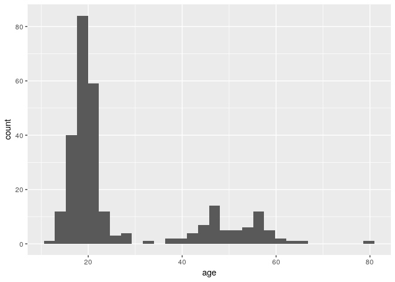
stat_bin() using bins = 30. Pick better value
with binwidth” mean?
This is a message that came from geom_histogram(). If we look at the
help documentation for geom_histogram(), we can see this paragraph in
the Details section:
By default, the underlying computation (‘stat_bin()’) uses 30 bins; this is not a good default, but the idea is to get you experimenting with different bin widths. You may need to look at a few to uncover the full story behind your data.
Each bar in a histogram is considered a “bin”. The height of each bar is the number of observations that fall within the bounds of that bar. Because we are looking at age, it may be better for us to define a binwidth of 1 so that each bar represents a single year.
ggplot(stegen) + geom_histogram(aes(x = age), binwidth = 1)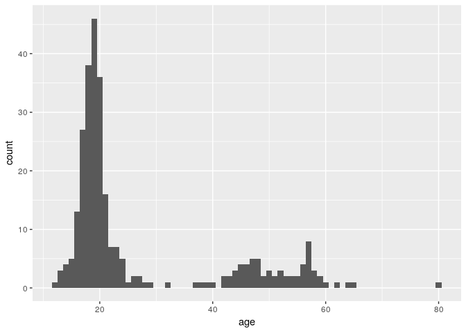
We can differentiate between genders by filling the bars with color (n.b. we are also setting the binwidth to be 1 year):
ggplot(stegen) + geom_histogram(aes(x = age, fill = sex), binwidth = 1)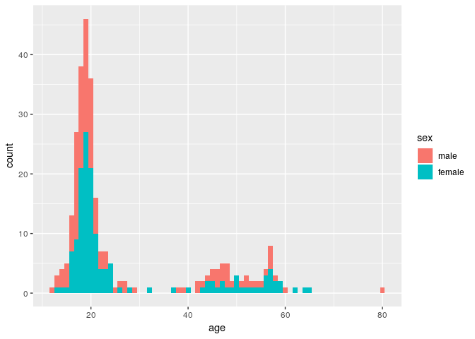
Here, the age distribution is pretty much identical between male and female.
ggplot2 graphics are highly customisable, and a lot of help and examples can be found online. The official website is a good place to start.
For instance, here we:
- define the width of each bin to be 1 year (
binwidth = 1to avoid the warning from above) - add white borders to the plot (
color = "white") - specify colors manually for male / female, using specified color
codes (see html color
picker to
define your own colors) (
scale_fill_manual(...)) - add labels for title, x and y axes (
labs()) - specify a lighter general color theme, using Times font of a larger
size by default (
theme_light(...)) - move the legend inside the plot (
theme(...))
Note, it’s best practice to include only one ggplot2 command per line if you are using more than two.
ggplot(stegen) +
geom_histogram(aes(x = age, fill = sex), binwidth = 1, color = "white") +
scale_fill_manual(values = c(male = "#4775d1", female = "#cc6699")) +
labs(title = "Age distribution by gender", x = "Age (years)", y = "Number of cases") +
theme_light(base_family = "Times", base_size = 16) +
theme(legend.position = c(0.8, 0.8))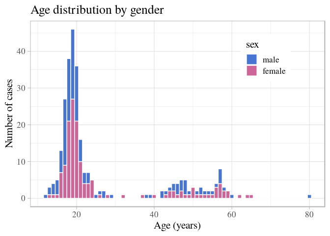
Epidemic curve
Incidence curves can be built using the package incidence, which will
compute the number of new cases given a vector of dates (here, onset)
and a time interval (1 day by default). We use the function
incidence() to achieve this, and then visualise the results:
i <- incidence(stegen$date_onset)
## 160 missing observations were removed.
i
## <incidence object>
## [131 cases from days 1998-06-26 to 1998-07-09]
##
## $counts: matrix with 14 rows and 1 columns
## $n: 131 cases in total
## $dates: 14 dates marking the left-side of bins
## $interval: 1 day
## $timespan: 14 days
## $cumulative: FALSE
plot(i)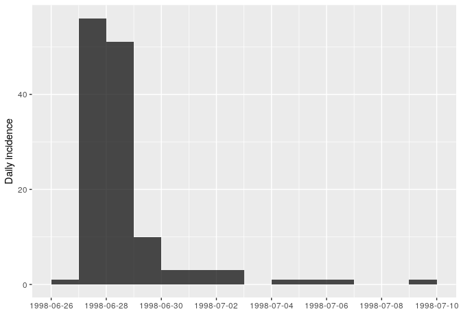
Details of the case counts can be obtained using:
as.data.frame(i)
## dates counts
## 1 1998-06-26 1
## 2 1998-06-27 56
## 3 1998-06-28 51
## 4 1998-06-29 10
## 5 1998-06-30 3
## 6 1998-07-01 3
## 7 1998-07-02 3
## 8 1998-07-03 0
## 9 1998-07-04 1
## 10 1998-07-05 1
## 11 1998-07-06 1
## 12 1998-07-07 0
## 13 1998-07-08 0
## 14 1998-07-09 1How long is this outbreak? It looks like most cases occurred over the course of 3 days, but that cases kept showing up 10 days after the peak. Is this true? Not really. Stratifying the epidemic curve by case definition will clarify the situation:
i_ill <- incidence(stegen$date_onset, group = stegen$ill)
## 160 missing observations were removed.
i_ill
## <incidence object>
## [131 cases from days 1998-06-26 to 1998-07-09]
## [2 groups: case, non case]
##
## $counts: matrix with 14 rows and 2 columns
## $n: 131 cases in total
## $dates: 14 dates marking the left-side of bins
## $interval: 1 day
## $timespan: 14 days
## $cumulative: FALSE
as.data.frame(i_ill)
## dates case non case
## 1 1998-06-26 0 1
## 2 1998-06-27 48 8
## 3 1998-06-28 46 5
## 4 1998-06-29 8 2
## 5 1998-06-30 0 3
## 6 1998-07-01 0 3
## 7 1998-07-02 0 3
## 8 1998-07-03 0 0
## 9 1998-07-04 0 1
## 10 1998-07-05 0 1
## 11 1998-07-06 0 1
## 12 1998-07-07 0 0
## 13 1998-07-08 0 0
## 14 1998-07-09 0 1
plot(i_ill, color = c("non case" = "#66cc99", "case" = "#993333"))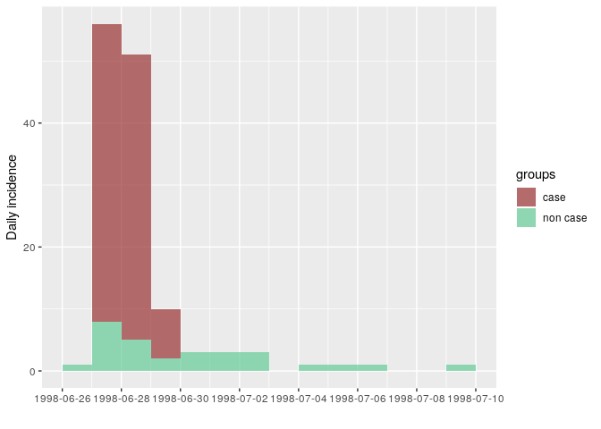
The outbreak really only happened over 3 days: onsets reported after did not match the epi case definition. This is compatible with a food-borne outbreak with limited or no person-to-person transmission.
Note that the plots produced by incidence are ggplot2 objects, so that the options seen before can be used for further customisation (see below).
More information on the incidence package can be found from the dedicated website. Here, we illustrate how incidence can be stratified e.g. by case definition:
We can also customise this graphic like other ggplot2 plots (see this tutorial for more):
plot(i_ill, border = "white", color = c("non case" = "#66cc99", "case" = "#993333")) +
geom_hline(yintercept = 1:55, color = "white") +
labs(title = "Epicurve by case", x = "Date of onset", y = "Number of cases") +
theme_light(base_family = "Times", base_size = 16) +
theme(legend.position = c(0.8, 0.8)) +
theme(axis.text.x = element_text(angle = 45, hjust = 1, vjust = 1))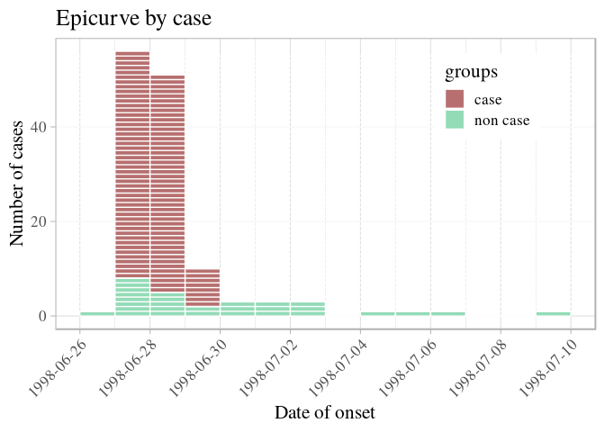
Age and gender distribution of the cases
We use the same principles as before to visualise the distribution of
illness by age and gender. To split the plot into different panels
according to sex, we use facet_grid() (see previous extra info on
ggplot2 customisation for further details otions):
ggplot(stegen) +
geom_histogram(aes(x = age, fill = ill), binwidth = 1) +
scale_fill_manual("Illness", values = c("non case" = "#66cc99", "case" = "#993333")) +
facet_grid(sex ~ .) +
labs(title = "Cases by age and gender") +
theme_light()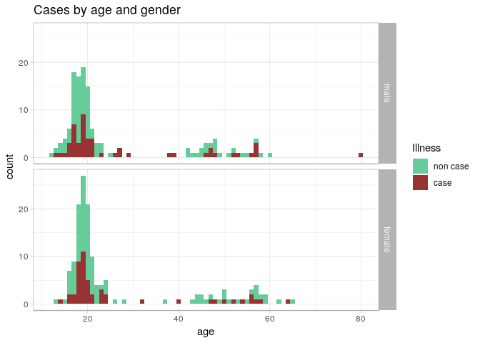
From these graphics, we can see that illness does not appear to depend on age or gender, which suggests that the illness was caused by one or more of the foods consumed. We will explore this with a risk ratio analysis in the next section.
Looking for the culprits
In order to figure out which food item was responsible for the outbreak, we need to test the Risk Ratio for all of the food items recorded. Risk ratios are normally computed on contingency tables (commonly known as 2x2 tables). In this part, we will compute contingency tables for each predictor (food item) against the defined cases, calculate their risk ratio with confidence intervals and p-values, and plot them as points and errorbars using ggplot2.
Reading in clean data
In the section on saving clean data, we saved a binary file with our
stegen data set. If you are starting here, you will want to read this
file in with readRDS().
stegen_clean_rds <- here("data", "cleaned", "stegen_clean.rds")
stegen <- readRDS(stegen_clean_rds)
head(stegen)## # A tibble: 6 x 23
## unique_key ill date_onset sex age tiramisu tportion wmousse dmousse
## <chr> <fct> <date> <fct> <dbl> <dbl> <dbl> <dbl> <dbl>
## 1 210 case 1998-06-27 fema… 18 1 3 0 1
## 2 12 case 1998-06-27 male 57 1 1 0 1
## 3 288 case 1998-06-27 fema… 56 0 0 0 0
## 4 186 case 1998-06-27 male 17 1 1 1 0
## 5 20 case 1998-06-27 fema… 19 1 2 0 0
## 6 148 case 1998-06-27 male 16 1 2 1 1
## # ... with 14 more variables: mousse <dbl>, mportion <dbl>, beer <dbl>,
## # redjelly <dbl>, fruit_salad <dbl>, tomato <dbl>, mince <dbl>,
## # salmon <dbl>, horseradish <dbl>, chickenwin <dbl>, roastbeef <dbl>,
## # pork <dbl>, latitude <dbl>, longitude <dbl>
Isolating the variables to test
Because not all of the columns in our data set are food items (i.e. “age”, and “tportion”), we only want to keep the columns that are food items for our analysis.
names(stegen)
## [1] "unique_key" "ill" "date_onset" "sex" "age"
## [6] "tiramisu" "tportion" "wmousse" "dmousse" "mousse"
## [11] "mportion" "beer" "redjelly" "fruit_salad" "tomato"
## [16] "mince" "salmon" "horseradish" "chickenwin" "roastbeef"
## [21] "pork" "latitude" "longitude"In this case, we need to retain columns 6 to 21, excluding tportion
and mportion, which are not binary; this can be done using the
subsetting brackets [ ], where we will place character vector
indicating the columns we want to
keep.
to_keep <- c('tiramisu', 'wmousse', 'dmousse', 'mousse', 'beer', 'redjelly',
'fruit_salad', 'tomato', 'mince', 'salmon', 'horseradish',
'chickenwin', 'roastbeef', 'pork')
to_keep
## [1] "tiramisu" "wmousse" "dmousse" "mousse" "beer"
## [6] "redjelly" "fruit_salad" "tomato" "mince" "salmon"
## [11] "horseradish" "chickenwin" "roastbeef" "pork"
food <- stegen[to_keep]
food
## # A tibble: 291 x 14
## tiramisu wmousse dmousse mousse beer redjelly fruit_salad tomato mince
## <dbl> <dbl> <dbl> <dbl> <dbl> <dbl> <dbl> <dbl> <dbl>
## 1 1 0 1 1 0 0 0 0 0
## 2 1 0 1 1 0 0 1 0 1
## 3 0 0 0 0 0 0 0 1 1
## 4 1 1 0 1 0 1 0 0 0
## 5 1 0 0 0 1 0 0 0 0
## 6 1 1 1 1 0 0 1 0 1
## 7 1 0 1 1 0 0 1 0 0
## 8 1 1 1 1 0 1 1 0 0
## 9 1 1 1 1 1 0 0 1 0
## 10 1 1 1 1 0 1 0 0 0
## # ... with 281 more rows, and 5 more variables: salmon <dbl>,
## # horseradish <dbl>, chickenwin <dbl>, roastbeef <dbl>, pork <dbl>Risk ratios
For one variable
The risk ratio is defined as
the ratio between the proportion of illness in one group (typically
‘exposed’) vs another (‘non-exposed’). For instance, let us consider
the contingency table of pork consumption and illness. One way to
calcuate a contingency table is using the epitable() function from the
epitools package:
pork_table <- epitable(food$pork, stegen$ill)
pork_table
## Outcome
## Predictor non case case
## 0 115 54
## 1 72 48We can get the risk ratio by using the riskratio() function from the
epitools package. Here, we want to use Yates’ continuity correction
and calculate Wald confidence intervals (more information about this can
be found on the help page for riskratio() by typing ?riskratio in
your R console).
pork_rr <- riskratio(pork_table, correct = TRUE, method = "wald")
pork_rr
## $data
## Outcome
## Predictor non case case Total
## 0 115 54 169
## 1 72 48 120
## Total 187 102 289
##
## $measure
## risk ratio with 95% C.I.
## Predictor estimate lower upper
## 0 1.000000 NA NA
## 1 1.251852 0.9176849 1.707703
##
## $p.value
## two-sided
## Predictor midp.exact fisher.exact chi.square
## 0 NA NA NA
## 1 0.1620037 0.1708777 0.198536
##
## $correction
## [1] TRUE
##
## attr(,"method")
## [1] "Unconditional MLE & normal approximation (Wald) CI"The documentation of riskratio() shows that it returns quite a few
things as a list. However, we only want three things from this list:
- risk ratio estimate
- 95% confidence interval
- P-value
pork_rr is an R object called a “list”:
class(pork_rr)
## [1] "list"A list is an R vector that can hold other vectors. While this may look
strange and unfamiliar, we’ve actually seen lists before. If you look
close, you can see that each element of a list starts with a $. This
is the exact same syntax as data frames. If we inspect our stegen data
frame, we can see that it is actually a list:
is.list(stegen)
## [1] TRUE
is.list(pork_rr)
## [1] TRUEEach column of a data frame is just a different element of a list. In
fact, we can use the $ operator to access different elements of the
list just as we would the columns of a data frame:
stegen_list <- as.list(stegen)
head(stegen_list)
## $unique_key
## [1] "210" "12" "288" "186" "20" "148" "201" "106" "272" "50" "216"
## [12] "141" "91" "98" "200" "109" "117" "281" "269" "77" "196" "16"
## [23] "168" "102" "204" "205" "271" "48" "287" "25" "15" "45" "125"
## [34] "113" "284" "121" "52" "207" "63" "43" "175" "214" "251" "213"
## [45] "65" "159" "29" "14" "165" "145" "202" "255" "169" "274" "254"
## [56] "61" "2" "86" "59" "74" "133" "115" "103" "138" "70" "173"
## [67] "144" "212" "234" "156" "146" "152" "31" "279" "36" "75" "286"
## [78] "215" "56" "199" "154" "27" "42" "49" "96" "66" "104" "13"
## [89] "221" "51" "177" "111" "242" "143" "278" "62" "176" "134" "256"
## [100] "55" "235" "58" "194" "282" "137" "118" "220" "24" "187" "190"
## [111] "189" "195" "231" "239" "289" "184" "126" "209" "290" "67" "170"
## [122] "230" "151" "283" "211" "69" "35" "233" "208" "155" "198" "40"
## [133] "119" "139" "180" "188" "157" "80" "203" "280" "37" "193" "53"
## [144] "22" "85" "232" "258" "265" "54" "237" "266" "236" "88" "10"
## [155] "11" "174" "185" "161" "226" "273" "227" "260" "223" "107" "183"
## [166] "250" "253" "44" "182" "228" "285" "83" "248" "136" "172" "46"
## [177] "114" "166" "164" "101" "21" "158" "108" "34" "276" "222" "130"
## [188] "275" "72" "218" "267" "76" "241" "171" "142" "89" "105" "39"
## [199] "167" "140" "124" "131" "17" "73" "97" "5" "123" "9" "99"
## [210] "84" "229" "116" "238" "217" "122" "240" "95" "110" "41" "206"
## [221] "23" "257" "163" "64" "100" "120" "160" "224" "94" "60" "263"
## [232] "191" "147" "179" "93" "57" "112" "268" "243" "219" "247" "38"
## [243] "33" "68" "4" "150" "79" "178" "127" "153" "261" "92" "90"
## [254] "264" "277" "181" "197" "225" "18" "1" "252" "47" "245" "78"
## [265] "162" "81" "3" "82" "32" "71" "30" "28" "135" "246" "149"
## [276] "7" "19" "249" "128" "6" "192" "270" "262" "259" "87" "8"
## [287] "129" "26" "132" "244" "291"
##
## $ill
## [1] case case case case case case case
## [8] case case case case case case case
## [15] case case case case case case case
## [22] case case case case case case case
## [29] case case case case case case case
## [36] case case case case case case case
## [43] case case case case case case case
## [50] case case case case case case case
## [57] case case case case case case case
## [64] case case case case case case case
## [71] case case case case case case case
## [78] case case case case case case case
## [85] case case case case case case case
## [92] case case case case case case case
## [99] non case non case non case non case case non case non case
## [106] non case non case non case non case non case non case non case
## [113] non case non case non case non case non case non case non case
## [120] non case non case non case case non case non case non case
## [127] non case non case non case non case non case non case non case
## [134] non case non case non case non case non case non case non case
## [141] non case non case non case non case non case non case non case
## [148] non case non case non case non case non case non case non case
## [155] non case non case non case non case non case non case non case
## [162] non case non case non case non case non case non case non case
## [169] non case non case non case non case non case non case non case
## [176] non case non case non case non case non case non case non case
## [183] non case non case non case non case non case non case non case
## [190] non case non case non case non case non case non case non case
## [197] non case non case non case non case non case non case non case
## [204] non case non case non case non case non case non case non case
## [211] non case non case case non case non case non case non case
## [218] non case non case non case non case non case non case non case
## [225] non case non case non case non case non case non case non case
## [232] non case non case non case non case non case non case non case
## [239] non case non case non case non case non case case non case
## [246] case non case non case non case non case non case non case
## [253] non case non case non case non case non case non case non case
## [260] non case non case non case non case non case non case non case
## [267] non case non case non case non case non case non case non case
## [274] non case non case non case non case non case non case non case
## [281] non case non case non case non case non case non case non case
## [288] non case non case non case non case
## Levels: non case case
##
## $date_onset
## [1] "1998-06-27" "1998-06-27" "1998-06-27" "1998-06-27" "1998-06-27"
## [6] "1998-06-27" "1998-06-27" "1998-06-27" "1998-06-27" "1998-06-27"
## [11] "1998-06-27" "1998-06-27" "1998-06-27" "1998-06-27" "1998-06-27"
## [16] "1998-06-27" "1998-06-27" "1998-06-27" "1998-06-27" "1998-06-27"
## [21] "1998-06-27" "1998-06-27" "1998-06-27" "1998-06-27" "1998-06-27"
## [26] "1998-06-27" "1998-06-27" "1998-06-27" "1998-06-27" "1998-06-27"
## [31] "1998-06-27" "1998-06-27" "1998-06-27" "1998-06-27" "1998-06-27"
## [36] "1998-06-27" "1998-06-27" "1998-06-27" "1998-06-27" "1998-06-27"
## [41] "1998-06-27" "1998-06-27" "1998-06-27" "1998-06-27" "1998-06-27"
## [46] "1998-06-27" "1998-06-27" "1998-06-28" "1998-06-28" "1998-06-28"
## [51] "1998-06-28" "1998-06-28" "1998-06-28" "1998-06-28" "1998-06-28"
## [56] "1998-06-28" "1998-06-28" "1998-06-28" "1998-06-28" "1998-06-28"
## [61] "1998-06-28" "1998-06-28" "1998-06-28" "1998-06-28" "1998-06-28"
## [66] "1998-06-28" "1998-06-28" "1998-06-28" "1998-06-28" "1998-06-28"
## [71] "1998-06-28" "1998-06-28" "1998-06-28" "1998-06-28" "1998-06-28"
## [76] "1998-06-28" "1998-06-28" "1998-06-28" "1998-06-28" "1998-06-28"
## [81] "1998-06-28" "1998-06-28" "1998-06-28" "1998-06-28" "1998-06-28"
## [86] "1998-06-28" "1998-06-28" "1998-06-28" "1998-06-28" "1998-06-28"
## [91] "1998-06-29" "1998-06-29" "1998-06-29" "1998-06-29" "1998-06-29"
## [96] "1998-06-29" "1998-06-29" "1998-06-29" NA NA
## [101] "1998-07-05" NA "1998-06-27" NA NA
## [106] NA NA "1998-07-02" NA NA
## [111] NA "1998-06-28" NA NA NA
## [116] NA NA NA NA "1998-07-01"
## [121] NA NA "1998-06-28" NA NA
## [126] NA NA NA "1998-06-30" NA
## [131] NA NA NA "1998-06-28" NA
## [136] NA NA NA NA NA
## [141] NA NA NA NA NA
## [146] NA NA NA NA "1998-07-09"
## [151] NA NA "1998-06-29" NA "1998-07-02"
## [156] NA NA NA NA NA
## [161] "1998-07-06" NA NA NA NA
## [166] NA NA NA NA NA
## [171] NA NA "1998-06-27" NA NA
## [176] NA NA NA "1998-06-27" NA
## [181] NA NA NA "1998-06-28" NA
## [186] NA NA NA NA "1998-06-30"
## [191] NA NA NA NA NA
## [196] "1998-06-27" NA NA "1998-06-28" NA
## [201] NA NA NA NA NA
## [206] NA NA NA NA NA
## [211] "1998-06-26" NA "1998-06-28" "1998-06-27" NA
## [216] NA NA NA "1998-06-27" NA
## [221] NA NA "1998-06-27" "1998-07-01" NA
## [226] NA NA NA NA NA
## [231] NA NA NA NA NA
## [236] NA NA NA NA NA
## [241] NA NA NA NA NA
## [246] "1998-06-28" "1998-07-02" NA NA NA
## [251] NA "1998-06-27" NA NA NA
## [256] NA NA NA NA NA
## [261] NA NA NA "1998-06-29" "1998-07-01"
## [266] "1998-06-27" NA "1998-06-28" NA NA
## [271] NA "1998-07-04" NA NA NA
## [276] NA NA NA NA NA
## [281] NA NA NA NA NA
## [286] NA NA "1998-06-30" NA NA
## [291] NA
##
## $sex
## [1] female male female male female male male male female male
## [11] female male male female male male male male female female
## [21] male female male male male female male female male male
## [31] female female female male female female male male female male
## [41] male female male male female female male female female female
## [51] male male male female female female male male female male
## [61] male male male female female female female male female female
## [71] female female male female male male male female male female
## [81] female female male male female male female male female male
## [91] female female male female male male female male female male
## [101] male female male male male female male female female female
## [111] female male female male male male male male female male
## [121] male female female female female male female female male female
## [131] male female male male female female female female male male
## [141] female male female male male female male female female female
## [151] female female female female female female female male male male
## [161] male female female male female female female male male male
## [171] female male male male female male male female male female
## [181] male male male male female female male male female male
## [191] male female female male female female male female female female
## [201] male male male female female male female female female male
## [211] male female male female male female male male male male
## [221] male male female male male male female female male female
## [231] female female male male male male female male female female
## [241] female female female female female female male female female female
## [251] female female male female female female female male female male
## [261] female male female male male female male female female female
## [271] female male female female male male female male male female
## [281] female female female male female female female female male female
## [291] male
## Levels: male female
##
## $age
## [1] 18 57 56 17 19 16 19 19 40 53 20 23 17 19 15 19 57 17 47 16 17 19 17
## [24] 17 18 18 29 14 13 21 19 20 57 38 18 64 57 27 23 21 21 20 20 18 24 24
## [47] 19 58 19 18 27 20 19 54 23 18 16 26 16 14 20 56 46 18 19 21 18 80 23
## [70] 20 50 18 48 21 47 18 47 17 NA 52 20 32 17 16 17 20 19 19 NA 19 19 19
## [93] 19 48 19 52 19 NA 21 18 20 19 39 17 22 13 20 18 17 17 62 17 21 54 20
## [116] 16 17 18 22 18 18 NA 19 17 20 57 20 20 48 19 44 19 46 51 17 16 22 18
## [139] 19 20 47 15 19 20 13 20 21 20 18 20 45 20 44 18 22 58 17 14 NA 20 20
## [162] NA 19 19 16 26 20 19 17 19 57 18 19 17 18 18 23 19 45 15 20 19 25 20
## [185] 20 20 48 23 17 17 46 19 21 18 24 18 52 50 23 55 19 16 18 19 50 49 65
## [208] 19 43 43 20 59 21 19 20 56 14 55 47 19 42 22 49 45 42 60 16 20 18 18
## [231] 21 19 19 17 17 18 45 58 20 24 57 19 20 56 46 18 17 37 44 19 21 19 18
## [254] 28 53 17 19 19 19 17 20 18 24 15 12 16 48 18 21 59 57 15 NA 20 18 18
## [277] 18 NA 16 20 16 51 18 21 22 18 18 21 17 21 22
##
## $tiramisu
## [1] 1 1 0 1 1 1 1 1 1 1 1 1 1 1 1 1 1 1 1 1 1 1 1
## [24] 1 1 1 1 1 1 1 1 1 1 1 1 1 1 1 1 1 1 1 1 1 1 1
## [47] 1 1 1 1 1 1 1 1 1 1 1 1 1 1 1 1 1 0 1 1 1 NA 1
## [70] 0 1 1 NA 1 1 1 1 1 1 1 1 1 1 1 0 1 1 0 1 1 1 1
## [93] 1 0 1 1 1 1 0 0 0 0 0 0 0 0 1 0 1 0 0 1 0 0 0
## [116] 0 0 0 NA 1 0 0 1 0 0 0 0 0 1 0 0 0 0 1 0 0 0 0
## [139] 0 0 0 0 0 0 0 0 0 0 0 0 0 0 1 0 0 0 0 0 0 0 1
## [162] 0 0 1 0 0 0 0 0 0 0 0 0 0 1 1 0 0 0 0 0 0 0 0
## [185] 0 0 0 NA 0 0 0 0 0 1 0 0 1 0 1 1 0 0 0 0 1 0 0
## [208] 0 0 0 0 0 1 0 0 1 0 0 0 0 1 0 0 1 0 0 0 1 1 0
## [231] 0 0 0 0 0 1 0 0 0 0 0 0 0 1 0 1 0 0 0 0 0 0 0
## [254] 0 0 1 0 0 0 1 0 0 0 1 0 0 0 0 0 0 NA 0 1 0 0 0
## [277] 0 0 0 0 0 0 0 0 0 0 0 0 0 0 1
stegen_list$ill
## [1] case case case case case case case
## [8] case case case case case case case
## [15] case case case case case case case
## [22] case case case case case case case
## [29] case case case case case case case
## [36] case case case case case case case
## [43] case case case case case case case
## [50] case case case case case case case
## [57] case case case case case case case
## [64] case case case case case case case
## [71] case case case case case case case
## [78] case case case case case case case
## [85] case case case case case case case
## [92] case case case case case case case
## [99] non case non case non case non case case non case non case
## [106] non case non case non case non case non case non case non case
## [113] non case non case non case non case non case non case non case
## [120] non case non case non case case non case non case non case
## [127] non case non case non case non case non case non case non case
## [134] non case non case non case non case non case non case non case
## [141] non case non case non case non case non case non case non case
## [148] non case non case non case non case non case non case non case
## [155] non case non case non case non case non case non case non case
## [162] non case non case non case non case non case non case non case
## [169] non case non case non case non case non case non case non case
## [176] non case non case non case non case non case non case non case
## [183] non case non case non case non case non case non case non case
## [190] non case non case non case non case non case non case non case
## [197] non case non case non case non case non case non case non case
## [204] non case non case non case non case non case non case non case
## [211] non case non case case non case non case non case non case
## [218] non case non case non case non case non case non case non case
## [225] non case non case non case non case non case non case non case
## [232] non case non case non case non case non case non case non case
## [239] non case non case non case non case non case case non case
## [246] case non case non case non case non case non case non case
## [253] non case non case non case non case non case non case non case
## [260] non case non case non case non case non case non case non case
## [267] non case non case non case non case non case non case non case
## [274] non case non case non case non case non case non case non case
## [281] non case non case non case non case non case non case non case
## [288] non case non case non case non case
## Levels: non case case
stegen$ill
## [1] case case case case case case case
## [8] case case case case case case case
## [15] case case case case case case case
## [22] case case case case case case case
## [29] case case case case case case case
## [36] case case case case case case case
## [43] case case case case case case case
## [50] case case case case case case case
## [57] case case case case case case case
## [64] case case case case case case case
## [71] case case case case case case case
## [78] case case case case case case case
## [85] case case case case case case case
## [92] case case case case case case case
## [99] non case non case non case non case case non case non case
## [106] non case non case non case non case non case non case non case
## [113] non case non case non case non case non case non case non case
## [120] non case non case non case case non case non case non case
## [127] non case non case non case non case non case non case non case
## [134] non case non case non case non case non case non case non case
## [141] non case non case non case non case non case non case non case
## [148] non case non case non case non case non case non case non case
## [155] non case non case non case non case non case non case non case
## [162] non case non case non case non case non case non case non case
## [169] non case non case non case non case non case non case non case
## [176] non case non case non case non case non case non case non case
## [183] non case non case non case non case non case non case non case
## [190] non case non case non case non case non case non case non case
## [197] non case non case non case non case non case non case non case
## [204] non case non case non case non case non case non case non case
## [211] non case non case case non case non case non case non case
## [218] non case non case non case non case non case non case non case
## [225] non case non case non case non case non case non case non case
## [232] non case non case non case non case non case non case non case
## [239] non case non case non case non case non case case non case
## [246] case non case non case non case non case non case non case
## [253] non case non case non case non case non case non case non case
## [260] non case non case non case non case non case non case non case
## [267] non case non case non case non case non case non case non case
## [274] non case non case non case non case non case non case non case
## [281] non case non case non case non case non case non case non case
## [288] non case non case non case non case
## Levels: non case caseAll of these are present in the pork_rr object, but this output does
not lend itself well to quick visual inspection. What we can do now is
to extract elements from this output and place it in a data frame.
The first thing we want is the risk ratio and the confidence intervals
for those consumption of pork. This is presented in the $measure
element of the list:
pork_rr$measure
## risk ratio with 95% C.I.
## Predictor estimate lower upper
## 0 1.000000 NA NA
## 1 1.251852 0.9176849 1.707703
class(pork_rr$measure)
## [1] "matrix"We can see that this is present as a “matrix”. A matrix has rows and
columns and we can access them like we do a vector with square brackets
([ ]), but we separate the rows and columns with a comma like so:
[rows, columns]. For example, if we wanted the risk ratio for pork
consumed, we would take the second row in the first column:
pork_rr$measure[2, 1]
## [1] 1.251852In our case, we want to take the entire second row, so we can leave the
columns portion blank:
pork_est_ci <- pork_rr$measure[2, ]
pork_est_ci
## estimate lower upper
## 1.2518519 0.9176849 1.7077027We also want to get the P-value, of which, we have three choices. In our case, we will choose the P-value from Fisher’s exact test and combine the result into a vector that we will turn into a data frame:
pork_p <- pork_rr$p.value[2, "fisher.exact"]
pork_p
## [1] 0.1708777
res <- data.frame(estimate = pork_est_ci["estimate"],
lower = pork_est_ci["lower"],
upper = pork_est_ci["upper"],
p.value = pork_p
)
res
## estimate lower upper p.value
## estimate 1.251852 0.9176849 1.707703 0.1708777Now we have a table that tells us that pork has a risk ratio of 1.252 CI: (0.918, 1.708), P = 0.171.
Univariate tests
Methods for testing the association between two variables can be broken down in 3 types, depending on which types these variables are:
- 2 categorical variables: Chi-squared test on the 2x2 table (a.k.a. contingency table) and similar methods (e.g. Fisher’s exact test)
- 1 quantitative, 1 categorical: ANOVA types of approaches; particular case with 2 groups: Student’s (t)-test
- 2 quantitative variables: Pearson’s correlation coefficient ((r)) and similar methods
We can use these approaches to test if the disease is linked to any of the other recorded variables. As illness itself is a categorical variable, only approaches of type 2 and 3 are illustrated in this case study.
Is illness linked to age?
We can use the function t.test() to test if the average age is
different across illness status. As this test assumes that the two
categories exhibit similar variation, we first ensure that the variances
are comparable using Bartlett’s test. The syntax variable ~ group is
used to indicate the variable of interest (left hand-side), and the
group (right hand-side):
bartlett.test(stegen$age ~ stegen$ill)
##
## Bartlett test of homogeneity of variances
##
## data: stegen$age by stegen$ill
## Bartlett's K-squared = 0.82311, df = 1, p-value = 0.3643The resulting p-value (0.364) suggests the variances are indeed comparable. We can thus proceed to a (t)-test:
t.test(stegen$age ~ stegen$ill, var.equal = TRUE)
##
## Two Sample t-test
##
## data: stegen$age by stegen$ill
## t = -0.55979, df = 281, p-value = 0.5761
## alternative hypothesis: true difference in means is not equal to 0
## 95 percent confidence interval:
## -4.509729 2.512679
## sample estimates:
## mean in group non case mean in group case
## 26.31148 27.31000The p-value of 0.576 confirms the previous graphics: the illness does not seem to be linked to age.
Is illness linked to gender?
To test the association between gender and illness (2 categorical variables), we first build a 2-by-2 (contingency) table, using:
tab_ill_sex <- table(stegen$ill, stegen$sex)
tab_ill_sex
##
## male female
## non case 86 102
## case 53 50Note that proportions can be obtained using prop.table:
## basic proportions
prop.table(tab_ill_sex)
##
## male female
## non case 0.2955326 0.3505155
## case 0.1821306 0.1718213
## expressed in %, rounded:
round(100 * prop.table(tab_ill_sex))
##
## male female
## non case 30 35
## case 18 17Once a contingency table has been built, the Chi-square test can be run
using chisq.test:
chisq.test(tab_ill_sex)
##
## Pearson's Chi-squared test with Yates' continuity correction
##
## data: tab_ill_sex
## X-squared = 0.6562, df = 1, p-value = 0.4179Here, the p-value of 0.418 suggests illness is not related to gender either.
Consolidating several steps into one (writing functions)
To recap, to get a risk ratio we’ve done the following:
- created a contingency table
- estimated the risk ratio
- extracted estimate into a data frame
However, we have 14 potential predictors to sort through and we don’t want to have to repeat these procedures manually over and over. One strategy to help with this is to create our own function, which we can think of as a miniature recipe for a computer to read. If we take the steps above and place them into individual steps we would get:
et <- epitable(food$pork, stegen$ill)
rr <- riskratio(et)
estimate <- rr$measure[2, ]
res <- data.frame(estimate = estimate["estimate"],
lower = estimate["lower"],
upper = estimate["upper"],
p.value = rr$p.value[2, "fisher.exact"]
)
res
## estimate lower upper p.value
## estimate 1.251852 0.9176849 1.707703 0.1708777Just like a recipe, a function needs both ingredients and instructions.
What we have above are instructions, but we still need to say what our
ingredients are. If we look at the above code, we can see that we need
to define our predictor (food$pork) and outcome (stegen$ill);
everything else flows from that. We can then write our function (which
we will call single_risk_ratio()) like
this:
single_risk_ratio <- function(predictor, outcome) { # ingredients defined here
et <- epitable(predictor, outcome) # ingredients used here
rr <- riskratio(et)
estimate <- rr$measure[2, ]
res <- data.frame(estimate = estimate["estimate"],
lower = estimate["lower"],
upper = estimate["upper"],
p.value = rr$p.value[2, "fisher.exact"]
)
return(res) # return the data frame
}Now, we can use this single_risk_ratio() like any other
function:
pork_rr <- single_risk_ratio(predictor = food$pork, outcome = stegen$ill)
pork_rr
## estimate lower upper p.value
## estimate 1.251852 0.9176849 1.707703 0.1708777If we change the variable, we’ll get a different answer:
fruit_rr <- single_risk_ratio(predictor = food$fruit_salad, outcome = stegen$ill)
fruit_rr
## estimate lower upper p.value
## estimate 2.500618 1.886773 3.314171 9.998203e-09We can combine the two using a function from dplyr called
bind_rows():
bind_rows(pork = pork_rr, fruit = fruit_rr, .id = "predictor")
## predictor estimate lower upper p.value
## 1 pork 1.251852 0.9176849 1.707703 1.708777e-01
## 2 fruit 2.500618 1.8867735 3.314171 9.998203e-09Here we can see that the fruit salad has a higher risk ratio with a
lower P-value, but we want to compare all of the variables and still,
copying and pasting all this code would be a nightmare and potentially
lead to errors. We will see in the next section how we can use R to
apply the function single_risk_ratio() to each column of our food
data frame to give us a table of risk ratios for all the food items.
Multiple variables
In the example above, we have computed the risk ratio using a simple recipe:
- create a contingency table
- estimate the risk ratio
- extract estimate into a data frame
We placed this recipe in a function called single_risk_ratio() and we
know we can use it to calcuate the risk ratio for individual variables,
but we need to be able to calculate it over all the variables in our
food data frame. The solution is to use an R function called
lapply(), which takes each element of a list (or column of a data
frame) and uses it as the first ingredient (also known as argument) of a
function. Like tapply(), the function can be anything and additional
arguments are placed behind the function. It will then return the output
as a list:
all_rr <- lapply(food, FUN = single_risk_ratio, outcome = stegen$ill)
head(all_rr)
## $tiramisu
## estimate lower upper p.value
## estimate 18.31169 8.814202 38.04291 1.794084e-41
##
## $wmousse
## estimate lower upper p.value
## estimate 2.847222 2.128267 3.809049 5.825494e-11
##
## $dmousse
## estimate lower upper p.value
## estimate 4.501021 3.086945 6.562862 1.167009e-19
##
## $mousse
## estimate lower upper p.value
## estimate 4.968958 3.299403 7.483336 1.257341e-20
##
## $beer
## estimate lower upper p.value
## estimate 0.6767842 0.4757688 0.96273 0.02806394
##
## $redjelly
## estimate lower upper p.value
## estimate 2.08206 1.555917 2.786123 4.415074e-06Finally, like we did above, we re-shape these results into a data frame
all_food_df <- bind_rows(all_rr, .id = "predictor")
all_food_df
## predictor estimate lower upper p.value
## 1 tiramisu 18.3116883 8.8142022 38.042913 1.794084e-41
## 2 wmousse 2.8472222 2.1282671 3.809049 5.825494e-11
## 3 dmousse 4.5010211 3.0869446 6.562862 1.167009e-19
## 4 mousse 4.9689579 3.2994031 7.483336 1.257341e-20
## 5 beer 0.6767842 0.4757688 0.962730 2.806394e-02
## 6 redjelly 2.0820602 1.5559166 2.786123 4.415074e-06
## 7 fruit_salad 2.5006177 1.8867735 3.314171 9.998203e-09
## 8 tomato 1.2898653 0.9379601 1.773799 1.368934e-01
## 9 mince 1.0568237 0.7571858 1.475036 7.893882e-01
## 10 salmon 1.0334249 0.7452531 1.433026 8.976422e-01
## 11 horseradish 1.2557870 0.9008457 1.750578 2.026013e-01
## 12 chickenwin 1.1617347 0.8376217 1.611261 4.176598e-01
## 13 roastbeef 0.7607985 0.4129094 1.401795 4.172932e-01
## 14 pork 1.2518519 0.9176849 1.707703 1.708777e-01This is still in the order of our data, but we want it sorted in order
of the risk ratio. For this, we will use the dplyr functions
arrange() and desc() to arrange our data by the risk ratio estimate
in descending order:
all_food_df <- arrange(all_food_df, desc(estimate))
all_food_df
## predictor estimate lower upper p.value
## 1 tiramisu 18.3116883 8.8142022 38.042913 1.794084e-41
## 2 mousse 4.9689579 3.2994031 7.483336 1.257341e-20
## 3 dmousse 4.5010211 3.0869446 6.562862 1.167009e-19
## 4 wmousse 2.8472222 2.1282671 3.809049 5.825494e-11
## 5 fruit_salad 2.5006177 1.8867735 3.314171 9.998203e-09
## 6 redjelly 2.0820602 1.5559166 2.786123 4.415074e-06
## 7 tomato 1.2898653 0.9379601 1.773799 1.368934e-01
## 8 horseradish 1.2557870 0.9008457 1.750578 2.026013e-01
## 9 pork 1.2518519 0.9176849 1.707703 1.708777e-01
## 10 chickenwin 1.1617347 0.8376217 1.611261 4.176598e-01
## 11 mince 1.0568237 0.7571858 1.475036 7.893882e-01
## 12 salmon 1.0334249 0.7452531 1.433026 8.976422e-01
## 13 roastbeef 0.7607985 0.4129094 1.401795 4.172932e-01
## 14 beer 0.6767842 0.4757688 0.962730 2.806394e-02Now we can use this data frame to plot the results using ggplot2:
# first, make sure the predictors are factored in the right order
all_food_df$predictor <- factor(all_food_df$predictor, unique(all_food_df$predictor))
# plot
p <- ggplot(all_food_df, aes(x = estimate, y = predictor, color = p.value)) +
geom_point() +
geom_errorbarh(aes(xmin = lower, xmax = upper)) +
geom_vline(xintercept = 1, linetype = 2) +
scale_x_log10() +
scale_color_viridis_c(trans = "log10") +
labs(x = "Risk Ratio (log scale)",
y = "Predictor",
title = "Risk Ratio for gastroenteritis in Stegen, Germany")
p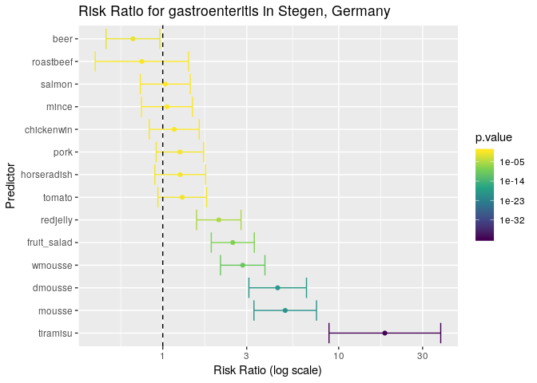
The results are a lot clearer now: the tiramisu has by far the highest risk ratio in this outbreak, but it’s wide confidence interval suggests that there may be confounding factors involved (i.e. the food items were not independent or in this case, were potentially sharing contaminated ingredients).
Just like we created the function single_risk_ratio() to calculate the
risk ratio of a single variable, we can create another function that
will calculate the risk ratio for all variables in a data frame. We can
do it the same way we did above. First, define the recipe:
all_rr <- lapply(food, FUN = single_risk_ratio, outcome = stegen$ill)
all_food_df <- bind_rows(all_rr, .id = "predictor")
all_food_df <- arrange(all_food_df, desc(estimate))
all_food_df$predictor <- factor(all_food_df$predictor, unique(all_food_df$predictor))Now, find the ingredients. The first step is lapply() which needs
food and stegen$ill, which are a data frame of predictors and a
vector of outcomes, resepectively, so we will add these as arguments
called predictors and outcome:
multi_risk_ratio <- function(predictors, outcome) {
all_rr <- lapply(predictors, FUN = single_risk_ratio, outcome = outcome)
all_food_df <- bind_rows(all_rr, .id = "predictor")
all_food_df <- arrange(all_food_df, desc(estimate))
all_food_df$predictor <- factor(all_food_df$predictor, unique(all_food_df$predictor))
return(all_food_df)
}And we can call the function like so:
multi_risk_ratio(predictors = food, outcome = stegen$ill)
## predictor estimate lower upper p.value
## 1 tiramisu 18.3116883 8.8142022 38.042913 1.794084e-41
## 2 mousse 4.9689579 3.2994031 7.483336 1.257341e-20
## 3 dmousse 4.5010211 3.0869446 6.562862 1.167009e-19
## 4 wmousse 2.8472222 2.1282671 3.809049 5.825494e-11
## 5 fruit_salad 2.5006177 1.8867735 3.314171 9.998203e-09
## 6 redjelly 2.0820602 1.5559166 2.786123 4.415074e-06
## 7 tomato 1.2898653 0.9379601 1.773799 1.368934e-01
## 8 horseradish 1.2557870 0.9008457 1.750578 2.026013e-01
## 9 pork 1.2518519 0.9176849 1.707703 1.708777e-01
## 10 chickenwin 1.1617347 0.8376217 1.611261 4.176598e-01
## 11 mince 1.0568237 0.7571858 1.475036 7.893882e-01
## 12 salmon 1.0334249 0.7452531 1.433026 8.976422e-01
## 13 roastbeef 0.7607985 0.4129094 1.401795 4.172932e-01
## 14 beer 0.6767842 0.4757688 0.962730 2.806394e-02Note that we have defined arguments for predictors and outcome, but
we didn’t define an argument for the single_risk_ratio() function.
This is because we know that we’ve defined it above, but this also means
that if we want to use the multi_risk_ratio() function in other
scripts, we have to also define single_risk_ratio() as well. One way
of keeping these organised is to always write the functions
together:
single_risk_ratio <- function(predictor, outcome) { # ingredients defined here
et <- epitools::epitable(predictor, outcome) # ingredients used here
rr <- epitools::riskratio(et)
estimate <- rr$measure[2, ]
res <- data.frame(estimate = estimate["estimate"],
lower = estimate["lower"],
upper = estimate["upper"],
p.value = rr$p.value[2, "fisher.exact"]
)
return(res) # return the data frame
}
multi_risk_ratio <- function(predictors, outcome) {
all_rr <- lapply(predictors, FUN = single_risk_ratio, outcome = outcome)
all_food_df <- dplyr::bind_rows(all_rr, .id = "predictor")
all_food_df <- dplyr::arrange(all_food_df, dplyr::desc(estimate))
all_food_df$predictor <- factor(all_food_df$predictor, unique(all_food_df$predictor))
return(all_food_df)
}You might notice, however that these functions look a bit different. The
epitable() function is now written as epitools::epitable(). This is
no accident. This is a way for us to tell R to use a function even if
the package hasn’t been loaded, which makes it easier to share these
functions.
Plotting a very basic spatial overview of cases
To complete your report, you would like to include a very basic spatial
overview of cases. Based on the postal codes of all individuals with a
date of symptom onset spatial coordinates were generated providing
everyone with a latitude and longitude which corresponds with their
household (in relation to their postal code). The variables latitude
and longitude include the longitude and latitude which we will use to
plot the cases using ggplot2. Here, we want to plot the data to see if
there is any spatial component to the outbreak. Since we have the
coordinates for each household, it becomes straightforward to plot them
with ggplot2. Here we will use points and color them based on whether
or not the person was ill:
ggplot(stegen) +
geom_point(aes(x = longitude, y = latitude, color = ill)) +
scale_color_manual("Illness", values = c("non case" = "#66cc99", "case" = "#993333")) +
coord_map()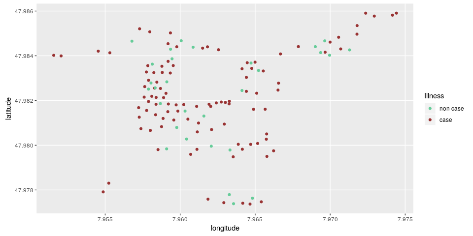
Here, we can see that there is no clear correlation between illness and location.
Using shapefile data
It’s not uncommon to have community-level shapefile data. These data
give us a better idea of how the cases relate to each other. In this
instance, we have shapefiles of the households located in
data/stegen-map/stegen_households.shp. We will use the read_sf()
function from the sf package to read the shapefiles
in:
stegen_shp <- read_sf(here("data", "stegen-map", "stegen_households.shp"))Now we can use the same ggplot2 code as above, but we place a call to
geom_sf() right after the ggplot call to place the shapes underneath
the points. Note that we are removing the coord_map() because the
shapefile ensures that the projection is correct.
ggplot(stegen) +
geom_sf(data = stegen_shp) +
geom_point(aes(x = longitude, y = latitude, color = ill)) +
scale_color_manual("Illness", values = c("non case" = "#66cc99", "case" = "#993333")) 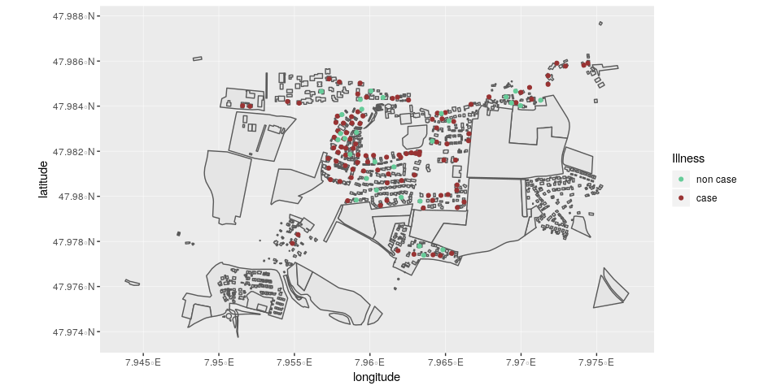
Interactive maps
It is also possible to create interactive maps that allow you to zoom in
and get information about individual cases. This uses a different system
than ggplot2, but behaves in a similar idea of building up the map
layer by layer. Here, we use the package leaflet, which uses image
data from open street maps. Because mapping could take up an entire
workshop in and of itself, we will present the code as is. One thing
that we must do first is to subset the data to all cases with
non-missing coordinates with the command !is.na() where the ! means
“not” and is.na() checks each element of a vector if it’s missing.
stegen_sub <- stegen[!is.na(stegen$longitude), ]# create the map
lmap <- leaflet()
# add open street map tiles
lmap <- addTiles(lmap)
# set the coordinates for Stegen
lmap <- setView(lmap, lng = 7.963, lat = 47.982, zoom = 15)
# Add the shapefile
lmap <- addPolygons(lmap, data = st_transform(stegen_shp, '+proj=longlat +ellps=GRS80'))
# Add the cases
lmap <- addCircleMarkers(lmap,
label = ~ill,
color = ~ifelse(ill == "case", "#993333", "#66cc99"),
stroke = FALSE,
fillOpacity = 0.8,
data = stegen_sub)
# show the map
lmapConclusion
This case study illustrated how R can be used to import data, clean data, and derive basic summaries for a first glance at the data. It also showed how to generate graphics using ggplot2, and how to detect associations between several potential risk factors and the occurrence of illness. One major caveat here is that we are not accounting for potential confounding factors. These will be treated in a separate case study, which will focus on the use of logistic regression in epidemic studies. Lastly we plotted a basic overview of the cases in this outbreak in relative distance to each other. More sophisticated mapping and spatial methodologies will be covered in other case studies.
About this document
Source
This case study was first designed by Alain Moren and Gilles Desve, EPIET. It is based on an real outbreak investigation conducted by Anja Hauri, RKI, Berlin, 1998.
Contributors
original version: Alain Moren, Gilles Desve
reviewers, previous versions: Marta Valenciano, Alain Moren
adaptation for EPIET module: Alicia Barrasa, Ioannis Karagiannis
rewriting for R: Alexander Spina, Patrick Keating, Janetta Skarp, Zhian N. Kamvar, Thibaut Jombart, Amrish Baidjoe
Contributions are welcome via pull requests. The source file for this case study can be found here.
Legal stuff
License: CC-BY Copyright: 2018